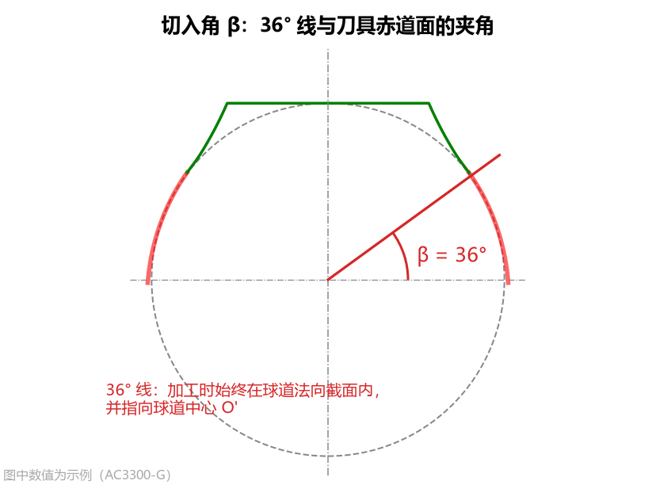
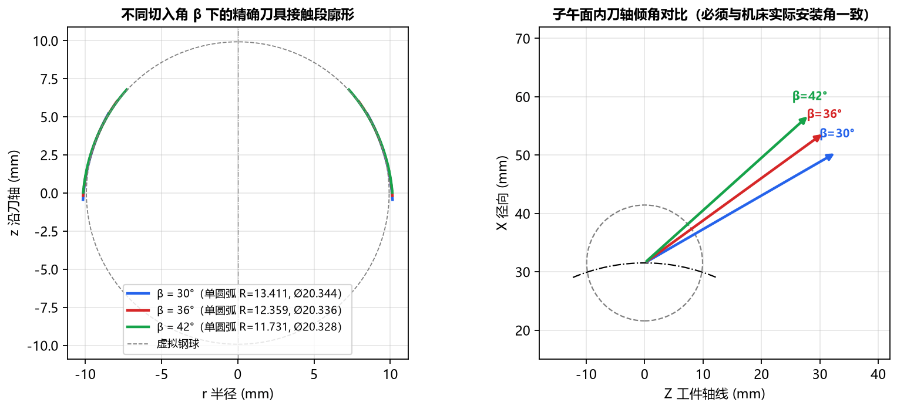
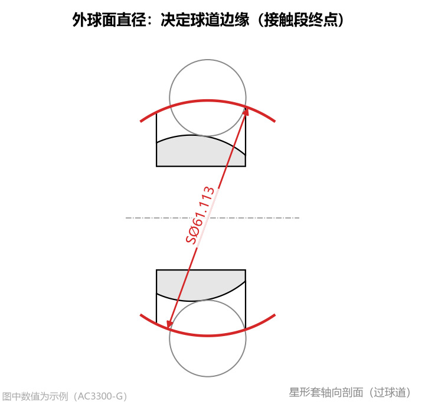
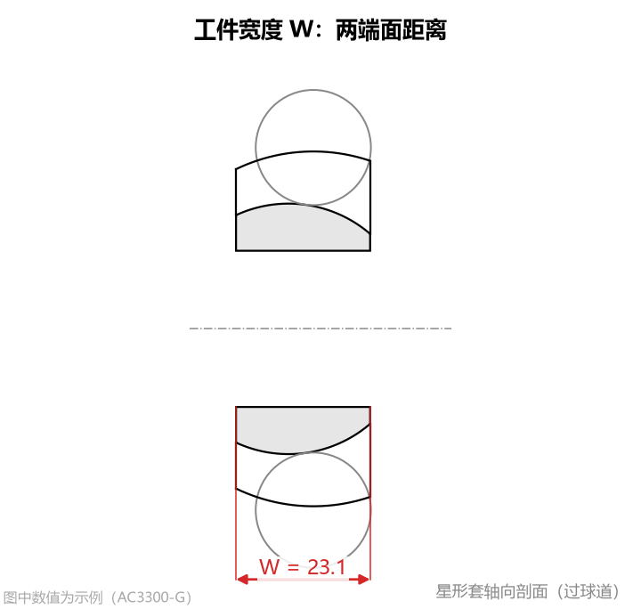
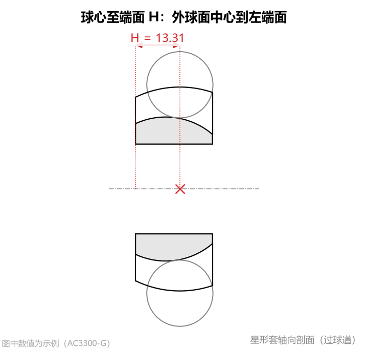

③ 刀具安装与 ④ 工件外形
在确定了球道轨迹和法向截面之后，还需要指定成型刀具在机床上的安装倾角（切入角）以及星形套工件的外形边界尺寸，以最终算出完整的刀具切削接触段。
1. ③ 刀具安装：切入角 β
- 单位：
°（度） - 默认值：
36.0 - 参数含义：成型刀具加工球道时的安装倾角。在刀具上，从虚拟钢球中心（刀具原点）出发、与刀具赤道面（垂直于刀轴的横截面）夹角为 的那条基准线（工程上常称为“ 线”），在加工摆动过程中始终位于球道法向截面内，并指向球道中心 。此时刀轴与球道径向的夹角为 。

- 设置方法：
- 请严格按照机床摆头方案或刀具图纸规定的主轴切入角填写（允许输入范围
15° ~ 75°，行业最常用标准值为36.0°）。
- 请严格按照机床摆头方案或刀具图纸规定的主轴切入角填写（允许输入范围
切入角 β 改变对刀具齿形的影响对比
切入角 是除球道截面本身外对刀具齿形影响最大的参数。下图展示了同一球道在 、、 三种不同切入角下算出的刀具廓形与刀轴倾角对比：

- 重要结论：
- 随着切入角 的改变，刀具接触段的高低范围、弯曲曲率以及拟合出的单圆弧半径 和圆柱直径都会发生显著变化（如上图中 时圆柱直径为 ，而 时变为 ）。
- 因此，软件中填写的
切入角 β必须与实际数控机床加工程序中的刀轴倾角 100% 一致，不能混用！
2. ④ 工件外形
星形套的外球面直径、总宽度和球心位置共同决定了球道槽在零件上实际存在的范围。
核心规律：这 3 个工件外形参数不会改变刀具齿形曲线本身的弯曲形状，它们只决定球道边缘切到哪里为止——即决定刀具红色切削接触段的起点位置（靠近刀柄一侧需要做到多长）以及加工姿态图中球道沿长度方向的摆角范围。
（1）外球面直径
- 单位：
- 默认值：
61.113 - 参数含义：星形套外球面的公称直径（零件图上常标注为
SØ...，如SØ61.113）。球道槽侧面与外球面的空间交线就是球道开口边缘。

- 设置方法：
- 按零件图上的外球面直径填写（必须大于内孔直径，且保证球道能露出外球面）。
- 特殊情况（仅研究完整圆弧截面时）：如果客户图纸只给了截面点表（如到圆弧终点 的 Table 2），没有给具体外球面直径，或者您希望把整段点表全部算进接触段，可以将
外球面直径填为一个足够大的数值（如200.0），此时接触段将一直算到点表末端。
- 对结果的影响：外球面直径越大，球道槽越深、开口边缘越高，所需的刀具红色接触段（靠刀柄侧）就越长。
（2）工件宽度 W
- 单位：
- 默认值：
23.1 - 参数含义：星形套沿工件轴线方向的总宽度（左右两个端面之间的轴向距离）。

- 设置方法：按零件图上的星形套总宽 填写。
- 对结果的影响：与
球心至端面 H一起确定星形套左右两端面的轴向位置，从而决定刀具沿球道摆动加工的起始摆角 与终止摆角 （显示在右侧 星形套截面 和 加工姿态(子午面) 页签中）。
（3）球心至端面 H
- 单位：
- 默认值：
13.31 - 参数含义：星形套外球面中心到左端面（加工基准端面，即图中轴向坐标 较小一侧的端面）的轴向距离。

- 设置方法：
- 按零件图上标注的外球面中心至基准端面距离填写。
- 如果零件外球面关于两端面对称居中，则填写宽度的一半（即 ）。
- 注意：左右两端面到球道中心 的距离不能超出钢球中心轨迹半径 ，否则软件会提示核对宽度 与距离 。